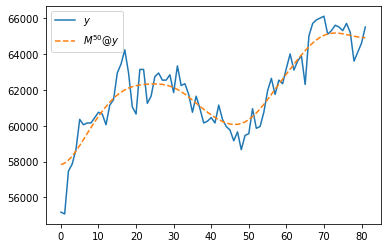
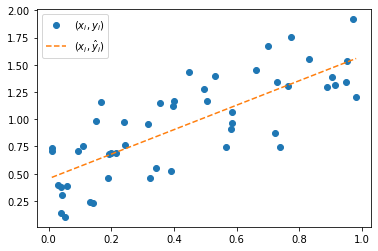

숙제
1. Stock 이라는 이름의 클래스를 만들고 아래의 기능을 넣어라.
(1) crawling 메소드: crawling 메소드는 start_date, end_date, code 를 입력으로 받는 함수이며, code 에 대응하는 주식의 주가를 크롤링하는 기능을 가진다. 크롤링된 주식의 가격은 numpy array 형태로 저장되어 있다.
hint: 아래의 코드를 관찰
start_date = "2023-01-01"
end_date = "2023-05-02"
code = "005930.KS"
y = yf.download(code, start=start_date, end=end_date)['Adj Close'].to_numpy()[*********************100%***********************] 1 of 1 completed(2) smoothing 메소드: smoothing는 크롤링된 주가 \({\boldsymbol y}=(y_1,\dots,y_n)\)를 아래의 수식을 통하여 \(n\)회 변환하는 기능을 한다.
- \(\tilde{y}_1= \frac{1}{4}(3y_1 + y_2)\)
- \(\tilde{y}_i= \frac{1}{4}(y_{i-1}+2y_i+y_{i+1})\), for \(i=2,3,\dots,n-1\)
- \(\tilde{y}_n= \frac{1}{4}(y_{n-1}+3y_{n})\)
따라서 smoothing 메소드는 횟수 \(n\)을 입력으로 받으며 만약에 스무딩횟수 \(n=50\) 라면 위의 변환을 50번 수행한다는 의미이다.
hint: 아래의 코드는 스무딩횟수가 50일 경우 계산결과를 나타낸다.
T = len(y)
M = (np.eye(T) + np.array([abs(i-j)<2 for i in range(T) for j in range(T)]).reshape(T,T))/4
M[0,0] = 3/4; M[-1,-1]= 3/4
np.linalg.matrix_power(M,50)@yarray([57829.5198335 , 57913.45130858, 58074.98767179, 58302.49883106,
58580.85980052, 58893.6342362 , 59225.15916278, 59562.11733312,
59894.34552673, 60214.84152593, 60519.13801971, 60804.35235309,
61068.26212859, 61308.69372022, 61523.36985828, 61710.19151418,
61867.78289263, 61996.05025836, 62096.51500847, 62172.26857912,
62227.52668205, 62266.88741201, 62294.48217892, 62313.22926322,
62324.3595587 , 62327.30400351, 62319.94157793, 62299.13135202,
62261.40667203, 62203.6964973 , 62123.95164058, 62021.58264813,
61897.65327525, 61754.8142197 , 61597.00327565, 61428.97717458,
61255.77153928, 61082.20095767, 60912.50404337, 60750.20562209,
60598.21432284, 60459.11116399, 60335.53051955, 60230.505942 ,
60147.65985811, 60091.15743789, 60065.40911365, 60074.57426582,
60121.97095198, 60209.5197855 , 60337.34065497, 60503.58512128,
60704.53726274, 60934.96461047, 61188.6585627 , 61459.07535255,
61739.97532625, 62025.95922279, 62312.81470816, 62597.61454921,
62878.54876233, 63154.52323711, 63424.60866005, 63687.46393417,
63940.87457 , 64181.52954181, 64405.10955815, 64606.6863928 ,
64781.35656111, 64924.97537827, 65034.83581495, 65110.15528052,
65152.28414726, 65164.61511766, 65152.2332612 , 65121.38844629,
65078.88899085, 65031.50938302, 64985.48231823, 64946.11407554,
64917.53018147, 64902.53224792])(3) plot 메소드: plot 메소드는 크롤링된 주가와 스무딩결과를 plot 하는 역할을 한다.
hint: 아래의 코드를 관찰
plt.plot(y,label=r'$y$')
plt.plot(np.linalg.matrix_power(M,50)@y,'--',label=r'$M^{50}@y$')
plt.legend()<matplotlib.legend.Legend at 0x7f37b524f8e0>
(풀이)
class Stock:
def __init__(self):
self.y = None
self.sy = None
def crawling(self,code,start_date,end_date):
self.y = yf.download(code, start=start_date, end=end_date)['Adj Close'].to_numpy()
def smoothing(self,n):
T = len(self.y)
self.n = n
M = (np.eye(T) + np.array([abs(i-j)<2 for i in range(T) for j in range(T)]).reshape(T,T))/4
M[0,0] = 3/4; M[-1,-1]= 3/4
self.sy = np.linalg.matrix_power(M,50)@self.y
def plot(self):
plt.plot(self.y,label=r'$y$')
plt.plot(self.sy,'--',label=r'$M^{}@y$'.format(self.n))
plt.legend() 2. 1에서 만든 Stock 클래스에서 kakao 인스턴스를 생성하라. 생성된 kakao 인스턴스에서 crawling 메소드를 이용하여 아래의 조건에 맞는 주식을 긁어오라.
- code: ‘000660.KS’ (하이닉스)
- start_date = “2023-01-01”
- end_date = “2023-05-26”
이후 .smoothing 메소드를 이용하여 \(n=50\)회 스무딩하고 .plot 메소드를 이용하여 결과를 시각화하라.
(사용예시)
[*********************100%***********************] 1 of 1 completed(풀이) – 사용예시가 곧 풀이임
3. LinearRegression 이라는 이름의 클래스를 만들고 아래의 기능을 넣어라.
(1) “클래스 \(\to\) 인스턴스” 인 시점에 길이가 \(n\)인 numpy array \({\bf x}=(x_1,\dots,x_n)\), \({\bf y}=(y_1,\dots,y_n)\)을 입력으로 받아 내부에 저장한다.
(2) learn 메소드: learn은 내부에 저장된 \({\bf x}\), \({\bf y}\)를 이용하여 \(\hat{\bf y}=(\hat{y}_1,\dots,\hat{y}_n)\)을 계산하는 역할을 한다. 계산은 아래의 수식을 이용한다.
\[\hat{\bf y}= {\bf X}({\bf X}^T {\bf X})^{-1}{\bf X}^T {\bf y}, \quad {\bf X}=\begin{bmatrix} 1 & x_1 \\ 1 & x_2 \\ \dots \\ 1 & x_n \end{bmatrix}\]
hint 아래의 코드를 관찰하라.
x = np.array([0.00983, 0.01098, 0.02951, 0.0384 , 0.03973, 0.04178, 0.0533 ,
0.058 , 0.09454, 0.1103 , 0.1328 , 0.1412 , 0.1497 , 0.1664 ,
0.1906 , 0.1923 , 0.198 , 0.2141 , 0.2393 , 0.2433 , 0.3157 ,
0.3228 , 0.3418 , 0.3552 , 0.3918 , 0.3962 , 0.4 , 0.4482 ,
0.496 , 0.507 , 0.53 , 0.5654 , 0.582 , 0.5854 , 0.5854 ,
0.6606 , 0.7007 , 0.723 , 0.7305 , 0.7383 , 0.7656 , 0.7725 ,
0.831 , 0.8896 , 0.9053 , 0.914 , 0.949 , 0.952 , 0.9727 ,
0.982 ])
y = np.array([0.7381, 0.7043, 0.3937, 0.1365, 0.3784, 0.3028, 0.1037, 0.3846,
0.706 , 0.7572, 0.2421, 0.232 , 0.9855, 1.162 , 0.4653, 0.6791,
0.6905, 0.6865, 0.9757, 0.7665, 0.9522, 0.4641, 0.5498, 1.1509,
0.5288, 1.1195, 1.1659, 1.4341, 1.2779, 1.1648, 1.4002, 0.7472,
0.9142, 0.9658, 1.0707, 1.4501, 1.6758, 0.8778, 1.3384, 0.7476,
1.3086, 1.7537, 1.5559, 1.2928, 1.3832, 1.3115, 1.3382, 1.536 ,
1.9177, 1.2069])(3) plot 메소드: plot은 \((x_i,y_i)\)와 \((x_i,\hat{y}_i)\)를 시각화하는 역할을 한다.
hint 아래의 코드를 관찰하라.
plt.plot(x,y,'o',label=r'$(x_i,y_i)$')
plt.plot(x,yhat,'--',label=r'$(x_i,\hat{y}_i)$')
plt.legend()<matplotlib.legend.Legend at 0x7f37ac1a8f10>
4. LinearRegression 을 이용하여 아래의 자료에 대한 분석을 진행하라. 즉 .learn() 을 이용하여 \(\hat{y}_i\) 를 계산하고 .plot()을 이용하여 결과를 시각화하라.
x = np.array(
[0.007, 0.008, 0.008, 0.011, 0.037, 0.047, 0.059, 0.07 , 0.072,
0.075, 0.078, 0.08 , 0.082, 0.11 , 0.114, 0.117, 0.133, 0.15 ,
0.161, 0.163, 0.172, 0.208, 0.209, 0.221, 0.229, 0.231, 0.234,
0.235, 0.249, 0.251, 0.256, 0.269, 0.269, 0.273, 0.275, 0.298,
0.305, 0.309, 0.34 , 0.362, 0.371, 0.374, 0.382, 0.387, 0.388,
0.394, 0.395, 0.397, 0.401, 0.404, 0.419, 0.433, 0.436, 0.466,
0.481, 0.492, 0.495, 0.508, 0.511, 0.512, 0.554, 0.57 , 0.574,
0.575, 0.584, 0.6 , 0.601, 0.615, 0.618, 0.623, 0.629, 0.633,
0.646, 0.65 , 0.654, 0.662, 0.673, 0.686, 0.702, 0.744, 0.754,
0.766, 0.772, 0.781, 0.798, 0.8 , 0.807, 0.836, 0.837, 0.871,
0.873, 0.877, 0.879, 0.889, 0.891, 0.902, 0.904, 0.923, 0.952,
0.981]
)y = np.array(
[4.004, 4.189, 5.483, 4.902, 5.174, 4.468, 4.95 , 4.463, 5.476,
4.446, 4.764, 5.244, 4.357, 4.796, 5.464, 4.196, 5.244, 4.868,
5.358, 4.493, 4.831, 4.716, 4.929, 4.588, 4.718, 4.389, 4.985,
4.266, 4.291, 3.697, 4.248, 4.88 , 5.126, 4.563, 4.131, 4.728,
4.168, 4.584, 3.953, 4.747, 3.592, 5.023, 4.601, 3.904, 4.092,
4.37 , 3.922, 4.145, 4.576, 4.25 , 4.051, 3.616, 4.634, 3.496,
4.631, 4.025, 4.197, 4.226, 4.808, 3.676, 3.834, 3.197, 4.36 ,
3.547, 3.956, 3.522, 4.26 , 3.443, 3.97 , 4.068, 4.186, 3.262,
3.452, 3.946, 3.875, 3.444, 3.501, 3.959, 3.843, 2.679, 3.266,
3.506, 2.916, 3.714, 4.007, 2.795, 3.329, 2.756, 3.72 , 2.381,
2.798, 3.035, 3.492, 3.22 , 3.073, 3.85 , 3.233, 3.396, 3.264,
2.986]
)